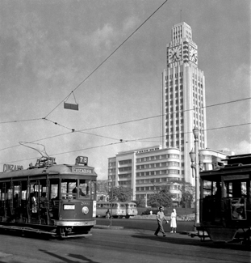

Rio Antigo
Sobre o Rio Antigo
Nesta página são apresentadas algumas imagens do Rio antigo na década de 40.
As fotos são de Pierre Verger, o fotógrafo
francês que se apaixonou pela Bahia e mudou para o Brasil para estudar os ritos afro-brasileiros.
Ele
esteve em São Paulo e no Rio de Janeiro nos anos 40 e em várias outras ocasiões, quando tirou as fotos
que expostas nesta página.
| Fotos do Rio Antigo | ||
|---|---|---|
FlamengoEsta foto representa a praia do Flamengo em 1940 
|
Aterro do flamengoEsta foto representa o aterro do Flamengo em 1940/41 
|
CopacabanaEssa foto representa a praia de Copacabana em 1940 
|
CopacabanaEsta foto representa Copacabana em 1940 
|
Central do BrasilEsta foto representa a Central do Brasil em 1940

|
Jardim BotânicoEsta foto representa o Jardim do Botânico em 1940 
|
CarnavalEsta foto representa o Carnaval em 1940 
|
CarnavalEsta foto representa o Carnaval em 1940 
|
Vista ChinesaEsta foto representa a Vista Chinesa em 1940 
|